Procedure and results · 19 September 2026
A projector does not emit light in proportion to the level it is told to show. This is the procedure that measures that response through a colour filter, builds a correction for it, and checks the correction — and the result for blue: after correction the light is within 1 % RMS of a straight line, worst point 1.5 %.
THE PROCEDURE
The three channels are coupled — the projector maps colours through a gamut, so a change to one channel moves the light another filter sees. So the calibration is a loop, not three separate ones. Blue is done; green and red are next.
| step | what | state |
|---|---|---|
| 0 | Align the camera ROI to a projector pixel square | done — redo if anything moves |
| 1 | Measure each colour’s background with the high-frequency SLI scan (frames averaged) | blue only, earlier |
| 2 | Size the black hole in the all-white field to reproduce that background | blue: 184×184 |
| 3 | Step a white square through 16 levels → first curve | done (blue) |
| 4 | Build a LUT from it and apply it to all three channels | done (blue-derived) |
| 5 | Sweep again to confirm blue is linear | done |
| 6 | Swap in the green filter, sweep under the same LUT, adjust green, sweep to confirm | to do |
| 7 | Swap in the red filter, sweep, adjust red, sweep to confirm | to do |
| 8 | Back to blue; repeat until all three are linear at once, each with its own curve | to do |
THE SCENE
The camera’s ROI is only 16×16 pixels and the sensor sits bare about 17 mm in front of the lens, so it also collects light from a wide ring of projector pixels around the ones it is aligned to. A lone square on black would sit in a darker surround than it does in a real SLI scan. So the scene is white everywhere except a black hole around the ROI, sized so the background at the ROI equals the SLI scan’s. The target square sits inside the hole.
host/align_roi.py.LUT[W]. host/screen.py, host/show_scene.py.STEP 0 · ALIGNMENT
Everything after this depends on knowing which projector pixels land on the camera’s 16×16 ROI, so it comes first and is redone from scratch if the camera, projector or mount moves. host/align_roi.py projects a white square on black, starts at 256 px, and at each size tries the square at a grid of positions and keeps the one with the brightest ROI reading; the next size searches around that winner and the size halves down to 16 px. A reading over the 600 ADU ceiling, or any saturated pixel, shortens the exposure and restarts that size; a best reading that is too weak lengthens it. That is why the exposure climbs from 300 µs to 2123 µs as the square shrinks and there is less light to see.
Run on 18 September the search converged on the square at (376, 584)–(392, 600), centre (384, 592) of 800×600 — the bottom edge of the frame. The scene squares in this report are 32 px, flush with that edge, which contains the aligned 16 px square.
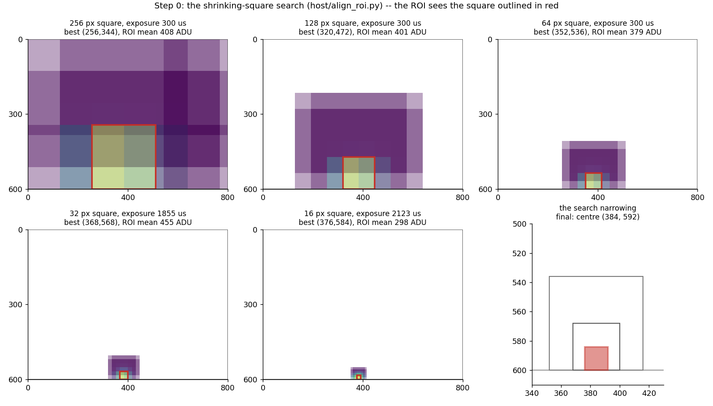
align_roi_run9.csv.STEPS 1 AND 2 · THE BACKGROUND
The ROI reads a small pedestal even when its own pixels are dark, because light from the pixels around it leaks in. What that leak adds depends on the picture, so the calibration scene has to reproduce the leak of the real measurement — the highest-frequency SLI scan — or the curve would be measured at the wrong background.
The SLI set with the finest fringes (octet 2), horizontal white stripes, is frozen and cycles through its eight phases. The probe is a ~5 µs exposure at a genlock delay of 8000 µs, after the last light of the frame, so it reads the level that persists when no sub-field is lit. The eight phases differ slightly (the ROI sits on a brighter or darker stripe, and fringe pixels near it change with phase), so the target is the mean over the eight phases, not any one pattern, and the frames within each phase are averaged. The command: python -u host/sli_background.py COM6 --octet 2 --delay 8000 --expo 5 --scope --live.
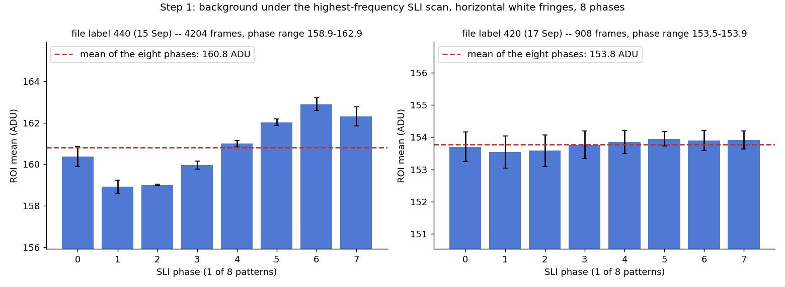
sli_bg_440_oct2_8000_raw.csv, sli_bg_420_oct2_raw.csv.The hole below was sized against the 440-labelled target of 160.8 ADU. The tone sweeps in this report are file-labelled 420, whose own SLI background reads 153.8. Whether a 184×184 hole reproduces that run’s background was not measured. The 440 label is a separate 440 nm filter; the 420 label is the 420 nm filter used for the tone sweeps. The target should be re-measured for the filter actually installed before the hole is trusted.
Fill the screen with white (255) and cut a black square hole around the ROI, open at the bottom edge. Full white with no hole reads 180.0 ADU at the ROI; growing the hole removes the nearest bright pixels and the reading falls until it equals the target. The response is steep between 128 and 192 px, so the last steps are 8 px. With the 440-labelled filter, 184×184 reads 160.3 ADU against a target of 160.8; 176 reads 163.9 and 192 reads 156.5. This step was done by hand, switching scenes while watching the ROI; there is no tool for it in host/ yet.
Three things about the leak came out of that work. It comes mainly from a ring 64–96 px from the ROI centre: growing the hole from 32 to 64 px changes the reading by 0.4 ADU, from 128 to 192 px by 18.5. Average picture level does not set the background: half the screen white but kept away from the ROI adds nothing, yet fringes with the same average add 7 ADU and full white adds 26. And a small square does not disturb it: black and a 32×32 square at the ROI read the same, so the square’s level can be stepped without moving the background under it.
The hole is a spatial mask, so it should not depend on which filter is in front of the sensor — and the reasoning is that both the SLI scan and the white-with-hole scene are grey content, so whatever hole matches one colour’s background should match the others’. Each new filter gets one spot-check of its own background level rather than a new hole search.
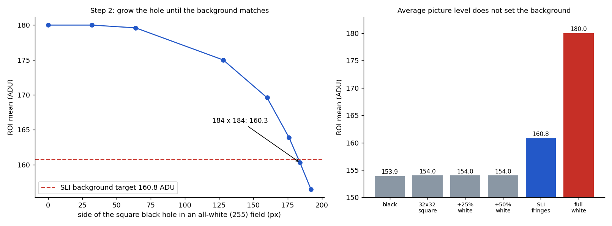
ONE MEASUREMENT
One exposure long enough to span a whole frame would fill the sensor from the white surround alone, so the frame is cut into 416 delays of 19.88 µs that tile it edge to edge, and the ROI value at each delay is recorded. The brightness of a level is the sum of those slices.
Each delay reads six camera lines. Averaging them let one glitched line drag a whole point: two back-to-back sweeps of similar scenes came out uncorrelated (r = 0.036), each with a narrow single-slice “peak” the other did not share. With the median they came out in the right order by a sensible margin.
Stepping the level 0 → 255 makes elapsed time and level the same variable, so any slow drift looks exactly like a level effect. In the first verification run the total correlated −0.946 with level and −0.946 with time, identically, and level 255 read below level 0. The sweep now visits the ends first and keeps halving the gaps:
0, 255, 119, 51, 187, 17, 85, 153, 221, 34, 68, 102, 136, 170, 204, 238, then 0 again as a drift check
THE FLOOR MOVES
Nearly all 416 slices are dark. So the dark floor, not the light, dominates the sum: 1 ADU of floor drift moves the total by about 416, while a dim square adds a few hundred. The floor settles by roughly 2.5 ADU over the first ~8 minutes of a run, which made W = 0 read brighter than W = 17 — the level-0 repeat at the end of that run read 63305 against 65094 at the start.
Each trace is shifted in y so its floor lies on the first-measured trace (W = 0), using a translation-only iterative closest point: match each point to the reference at the same delay, discard pairs whose residual exceeds 4 ADU (those are the lit slices), and step by the mean of the rest, starting from the difference of the two traces’ 20th-percentile floors (starting from zero finds nothing when a floor is more than 4 ADU off, as green’s is). Two variants fail: matching by nearest value across delays pairs a flat floor with itself and finds nothing, and trimming the smallest residuals (or taking a median) keeps the pairs that already agree and returns 0 on data quantised to 0.5 ADU.
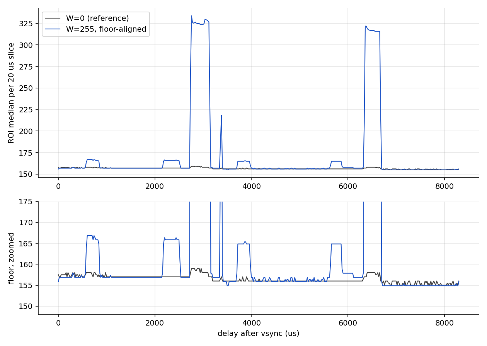
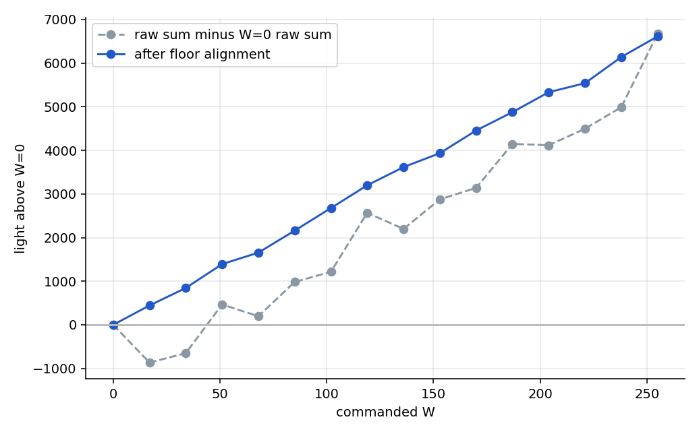
host/tone_analysis.py.FROM A SWEEP TO A LUT
With R = G = B = W and the blue filter in, the summed light barely moves until W ≈ 70, then climbs, and is many times steeper at the top than at the bottom. Blue needs its own correction because the low half of the range does almost nothing.
To build the LUT the curve is made flat-or-rising (levels 0–51 are set to the level 51 value, the sweep minimum, since an inverted non-monotonic curve is not a function), normalised to 0–1, and inverted: LUT[W] is the command that produces W/255 of the light. W = 0 stays commanded 0. The result is applied to red, green and blue alike.
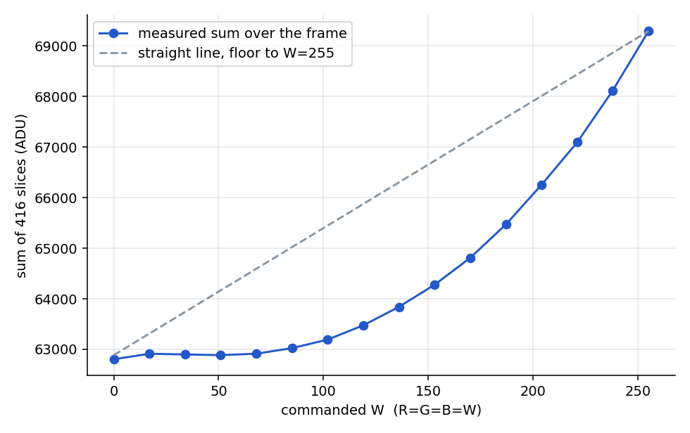
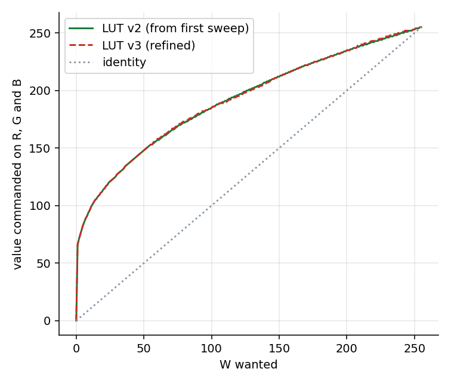
report_figures/data/blue_lut_v2.csv, blue_lut_v3.csv.VERIFICATION
Same scene, same method, with the LUT applied to all three channels. Brightness below is the floor-aligned light above the run’s own W = 0, summed over the slices that carry light (next section). Residuals are from a least-squares line through the origin; anchoring a line on the single W = 255 point instead is misleading, because that one point read about 1.5 % low in the v3 run and shifted every other point.
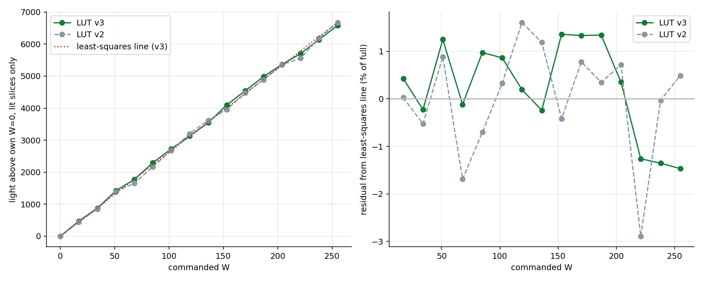
| W | R=G | B (v2) | B (v3) | light v2 | light v3 | resid v2 % | resid v3 % |
|---|---|---|---|---|---|---|---|
| 0 | 0 | 0 | 0 | 0 | 0 | +0.00 | +0.00 |
| 17 | 17 | 109 | 109 | 444 | 474 | +0.03 | +0.43 |
| 34 | 34 | 131 | 131 | 850 | 875 | -0.52 | -0.23 |
| 51 | 51 | 149 | 149 | 1386 | 1419 | +0.89 | +1.25 |
| 68 | 68 | 163 | 164 | 1657 | 1772 | -1.69 | -0.11 |
| 85 | 85 | 175 | 176 | 2165 | 2290 | -0.70 | +0.98 |
| 102 | 102 | 186 | 186 | 2675 | 2728 | +0.33 | +0.86 |
| 119 | 119 | 196 | 195 | 3203 | 3128 | +1.61 | +0.19 |
| 136 | 136 | 205 | 204 | 3617 | 3544 | +1.19 | -0.24 |
| 153 | 153 | 214 | 214 | 3953 | 4096 | -0.42 | +1.36 |
| 170 | 170 | 222 | 222 | 4474 | 4539 | +0.78 | +1.33 |
| 187 | 187 | 229 | 229 | 4888 | 4985 | +0.35 | +1.34 |
| 204 | 204 | 236 | 236 | 5355 | 5364 | +0.72 | +0.35 |
| 221 | 221 | 243 | 244 | 5557 | 5701 | -2.89 | -1.26 |
| 238 | 238 | 249 | 250 | 6189 | 6140 | -0.03 | -1.35 |
| 255 | 255 | 255 | 255 | 6666 | 6577 | +0.49 | -1.47 |
The two LUTs differ by at most one command count, worth about 40 light units (0.6 % of full scale), which is the same size as the run-to-run wobble. The improvement from v2 to v3 (worst point 2.9 % down to 1.5 %) is real in these two runs but not proven to be more than that wobble. The level-0 repeat at the end of the v3 run read 63218 against 63308 at the start — a drift of 0.14 % — because the floor had already settled.
WHERE THE LIGHT IS
Every slice the ICP matched to the reference floor is “no light”; every slice more than 4 ADU above it is “light”. Across the 16 levels, 184 slices are lit at least once and only 3 of the 868 flagged slice-and-level pairs have no lit neighbour, so the mask is not scattered noise. Restricting the sum to those slices changes the brightness by under 1 %: after alignment the dark slices add essentially nothing. The mask matters when spending measurement time — the dark slices need not be averaged again.
Windows lit in two or more levels (µs after vsync): 580–900, 920–1160, 2440–3420, 3580–4000, 5260–5640, 5880–6700. Two carry almost everything: 2440–3420 holds 54 % of the light at W = 255 and 5880–6700 holds 42 %; the other four together are about 4 %.
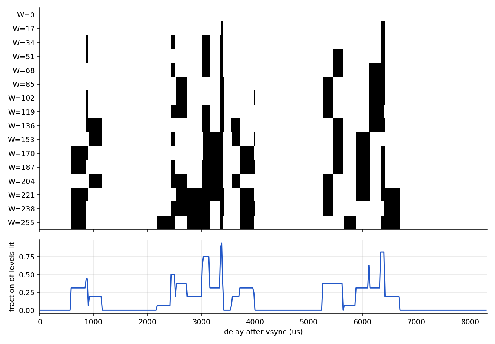
report_figures/data/icp_light_mask.csv.2440–3420 keeps rising through W = 238. 5880–6700 has reached 70–85 % of its full value by W = 85–102 and then runs flat. Both are seen through the same filter, so a single LUT can only linearise their sum. The smaller windows switch on at particular levels (580–900 near W = 170, 3580–4000 near W = 136–170) — consistent with more than one LED being on at once, which is why the lit set is a union, not blue-only times.
Several of the windows lit at W = 255 with the 4 ADU threshold (580–860, 2180–2520, 3720–3980) fall where the earlier filtered sweeps put green light. That is dim green leaking through the blue filter; the next section separates it from the blue LED’s own windows with a second threshold.
WHEN EACH LED IS LIT
Taking every level of a colour’s sweep, aligning each trace to that colour’s own W = 0 and keeping the largest excess at each delay shows when that LED can be lit. Two tiers separate real emission from everything else: strong is more than 30 ADU above W = 0, weak is 3–30 ADU. Blue uses all 15 levels of the v3 run; green (520 nm filter) uses only the four levels of its sweep that are valid, W = 51, 119, 187 and 255, because a display fault spoiled the rest.
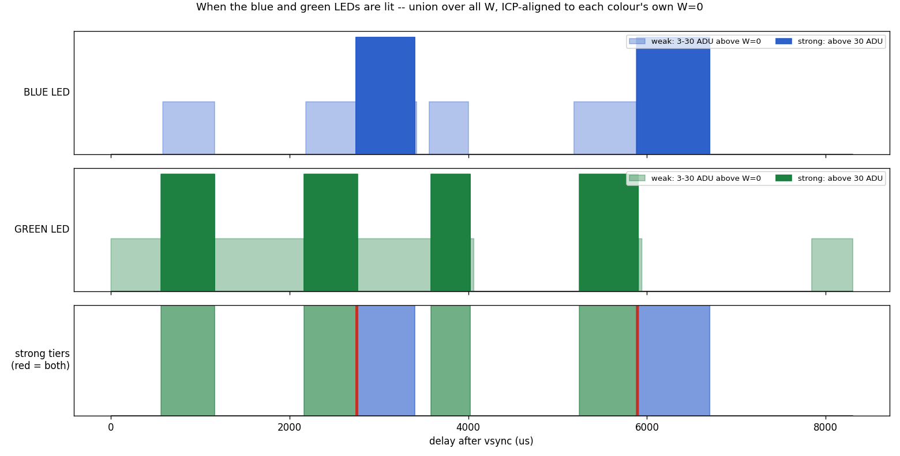
report_figures/data/led_windows_two_tier.csv.| LED | strong windows (µs after vsync) | slices | weak windows |
|---|---|---|---|
| blue | 2740–3400, 5880–6700 | 74 | 580–1160, 2180–2740, 3560–4000, 5180–5880 |
| green | 560–1160, 2160–2760, 3580–4020, 5240–5900 | 115 | 0–560, 1160–2160, 2760–3580, 7840–8320 |
The two strong tiers overlap in only 2 slices, at 2740–2760 and 5880–5900 µs, where blue takes over from green. They match the emitter windows measured earlier through the filters (archived report), which confirms the 520 nm filter is passing green and the other is passing blue.
Blue’s weak slices are green light leaking through the blue filter: 110 of the 115 fall inside green’s strong windows. This is what the 4 ADU lit mask used earlier in this report was picking up.
Green’s weak slices are floor, not emission. They fall in the gaps between its windows and at the end of the frame. Green’s floor rises with W (+11 ADU at W = 255 against W = 0, blue’s only +1), and one y-shift per trace cannot remove a lift that is not constant across the frame. At 3 ADU it fills most of the frame, so for green only the strong tier says when the LED is on.
Blue is more forgiving: after alignment, nothing across the 15 levels falls below −3 ADU and the slices near zero have a standard deviation of 0.23 ADU, so 3 ADU is safe as the lower bound for blue’s total light, while 30 keeps only the LED’s own windows.
ALL THREE LEDS
The whole screen is filled with 255 and the ROI is read at 277 delays of 30 µs that tile the frame, once through each filter (host/white_sweep.py): blue 420 nm (10 nm wide), green 550 nm, red 620 nm. It takes about a minute per filter and needs no square, hole or LUT, so it is the quickest way to check a filter passes the LED it should.
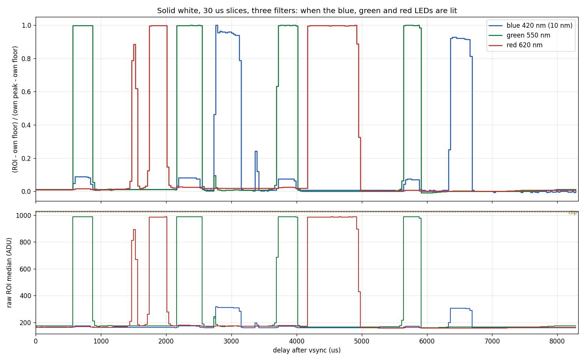
report_figures/data/white_sweep_*.csv.| LED / filter | floor | peak | peak above floor | lit windows above 25% of own range (µs after vsync) |
|---|---|---|---|---|
| blue 420 nm | 160 | 318 | 158 | 2730–3150, 6330–6690 |
| green 550 nm | 165 | 989 | 824 | 570–870, 2160–2550, 3690–4020, 5640–5910 |
| red 620 nm | 157 | 988 | 831 | 1470–1560, 1740–2010, 4170–4980 |
No slice is above 25 % of its range in more than one colour, so the three LEDs never overlap: any of them is lit for 39 % of the frame and none for the other 61 %. The blue and green windows agree with the two-tier result above, and the red windows (1470–2010 and 4170–4980 µs) agree with the ones measured earlier through a red filter (archived report).
Green and red clip: their peaks reach about 989 with roughly 205 of the 256 ROI pixels saturated at the 30 µs exposure. Blue peaks at only 318. So the peak heights and summed light are not comparable between colours — blue’s filter is also 10 nm wide against wider filters for the others — and the shapes of the green and red peaks are flattened. A shorter exposure (about 10 µs) would keep them under the ceiling.
Two filters passed almost nothing: 410 nm shows only 13 ADU above the floor, and 400 nm showed nothing by eye (its recorded sweep is invalid, because the lens was removed while it ran). The blue LED’s useful output starts near 420 nm.
STILL OPEN
The earlier off-time-emission and emitter-timing measurements are kept in ml750st_report_offtime_archive.html.